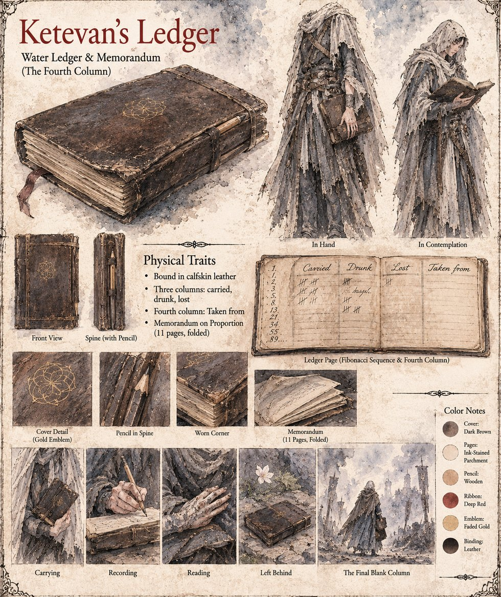

Ketevan’s Ledger
The Warden of Ormeli’s water ledger · the fourth column, Taken from · the Memorandum on Proportion in its back pocket
Each night, by one candle and not two, Ketevan enters the valley’s water in three columns, carried, drunk, lost, in a hand so even that the barley rows seemed to have been copied from it. On the night of the girl’s first rain she opens it and writes under the day’s date: Rain. One afternoon, four terraces. Asked: a little. Given: a little. Then she rules a fourth column with the edge of the ledger’s cover and heads it Taken from, and leaves it empty, because a woman who had kept accounts all her life could not receive a thing without asking whose account it had left. On the evening the Concordat is made she sits with the casket on the table, turns to a fresh page for a new kind of entry, headed Asked, Given, and carries the fourth column across to it from the page before.
The ledger is where the manuscript’s argument is kept. Every Portion has a debit, and every debit fell downhill: the Mother’s rain on Tskhavar, thin barley on the plain; the Son’s golden vintage, autumn rains that never came; the Father’s frost, orchards that flowered into a cold from nowhere. In the fourteenth year she sets it down in an eleven-page document, the Memorandum on Proportion, whose argument could be entered on a single line, The sky answers in proportion to the picture, and the account falls due elsewhere, and the Triple Synod files it in its cedar drawer. At the Mercy Vote she casts the voice and writes under the day’s date Voice cast: yes, and in the fourth column beside it, nothing, because she knew the answer and could not write it. At the crowning she opens it on her knee among the weeping and rules the line, Asked: the loveliest weather he knew. Given: it., and sits for a long while with the pencil above the fourth column before she writes whoever comes after, the only entry in thirty-one years that she could not verify, and the only one that she would never need to.
The line that cannot be closed is Nestan’s. On the night Rati brings the news she turns to the third column, headed Lost, and writes Nestan, daughter of Ketevan, aged forty-one; on the second night she completes it, Asked: a little. Given: all of it., and rules the fourth column and looks at it for a very long time. Taken from: For the first time in the thirty-two years that she had kept that column, she leaves it empty. She does not rule a line through it, and she does not write none, because it is not true; and she does not write me, because it is not accurate; and no word existed that was both. She lives seven years longer, enters each harvest in three columns, and does not rule the fourth again. When she is found dead on the highest terrace in the fortieth year, the ledger is on her knee, the last line in her hand and the last column blank, and the rest of the page ruled for entries that will not be made. It is placed in the strongroom in the velvet case where the dead arrow had once lain, and nobody opens it for two hundred years.
The manuscript gives the three columns, the fourth, the cover’s edge, the pencil, the entries above and the eleven pages. The sheet’s calfskin binding with a faded-gold rosette on the cover, deep-red ribbon, wooden pencil in the spine and sample page, which runs a column of numbers 1, 2, 3, 5, 8, 13, 21, 34, 55, 89 down its left margin, are its own, as is the Memorandum folded in its pocket and the hooded figure that carries and reads it in In Hand and In Contemplation. Its panels Carrying, Recording, Reading, Left Behind and The Final Blank Column follow the manuscript.
“Asked: a little. Given: all of it.”